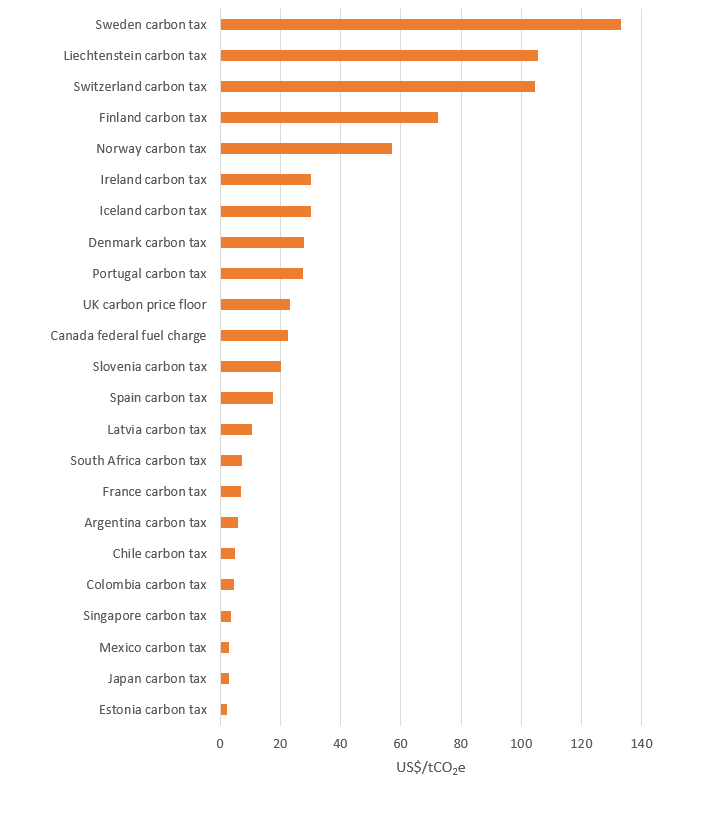
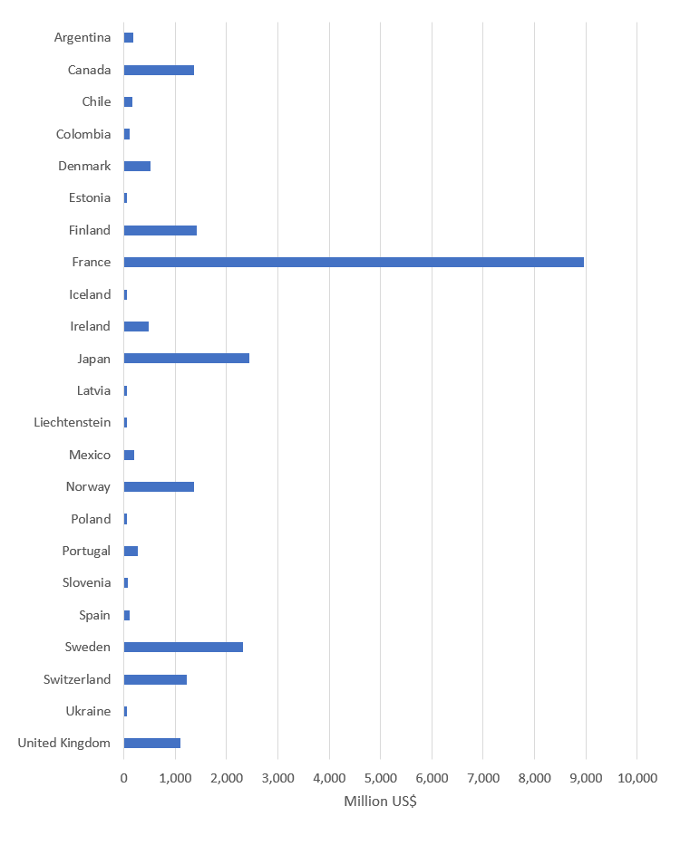
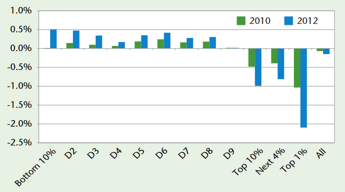

Word Count: 2927
The first carbon taxes were implemented in Scandinavian countries in the early 1990s (Lin and Li, 2011)
and as of 2020, 25 countries around the world have implemented carbon taxes at some scale, in total
covering 5.5% of global greenhouse gas (GHG) emissions (World Data Bank, 2021). By putting a price on
carbon, the taxes aim to curb demand for fossil fuel intensive products and the revenue generated is
designed to help mitigate impacts of the emissions (Nerudová et al., 2016).
On the surface, a carbon tax seems like a fair measure to help reduce GHG emissions, with the largest
polluters paying higher amounts. However, implementing a successful tax has proven challenging;
Australia’s carbon tax implemented in 2012 was repealed following a change of government just 2
years later (Crowley, 2017). Some difficulties in successfully implementing a carbon tax include:
the application of such a tax across an economy comprised of multiple industries (Metcalf et al., 2008),
potential economic regression (Meng et al., 2013) and the overall design of the tax and its features
such as revenue recycling (Liu et al., 2015). There are then concerns with how a carbon tax disproportionately
affects low-income households (Williams et al., 2015; Callan et al., 2009; Mathur and Morris, 2014),
which in turn has contributed to the general negative perceptions of a carbon tax (Douenne and Fabre, 2020;
Maestre-Andrés, Drews and van den Bergh, 2019). Despite these challenges, there have been successful
implementations of carbon taxes which have reduced GHG emissions, with negligible economic impact and
widespread public support (Murray and Rivers, 2015). This essay will evaluate and review carbon
taxation through 3 framings: economic, justice and communication & politics.
My Role: Researcher
Economic
Carbon pricing theory has been discussed in literature since the 1970s (Baumol, 1972; Montgomery 1972)
and to date has been typically implemented under emissions trading schemes (ETS) and carbon taxation.
A carbon tax can be categorised as a Pigouvian tax, following Pigou’s theory on eliminating negative
externalities from market activity through taxation (Nerudová et al., 2016). In the case of carbon taxation,
the negative externalities are greenhouse gases (GHGs) produced through combustion of particular fuels or
from the production of goods. By putting a price on these emissions, the tax increases the cost of commodities
that rely on the combustion and use of fossil fuels, which in turn will reduce demand for these particular
products (Metcalf et al., 2008). The revenue generated can then be used to offset financial impacts from
emissions, but according to Pigou’s theory, the market should shift to cheaper (or comparable) goods that
are less reliant on fossil fuels.
As of 2020, there are carbon taxes implemented in 25 countries at a national scale, and 7 additional
schemes implemented at subnational and regional levels (World Data Bank, 2021). Sweden has the highest
rate at $133.26/tCO2e whilst Poland’s price is at a mere $0.08/tCO2e (Fig. 1). A balance must be struck
when deciding on the price, Khastat et al. (2020) found that whilst the Finnish carbon tax was effective
at reducing emissions, it negatively impacted the social welfare of Finns, and thus recommend optimising
the future carbon price level to minimise this impact. Part of this variation is due to the interaction
with other policies, for example the Finnish tax exempts companies that are part of the European ETS.
 Figure 1: The price in US$ per tonne of CO2e emitted under various schemes around the world. Due to the differences in coverage and implementation methods, these values aren’t typically directly comparable (World Data Bank, 2021)
ETS (also known as cap-and-trade systems) places a cap on the GHG emissions for different industries,
which is gradually lowered over time. Permits, or allowances, are then created per unit of emissions
within the cap, which can be obtained from governing bodies, or traded with other companies. Organisations
that operate under this scheme must monitor and report their annual emissions and obtain enough permits
to cover their emissions or face heavy fines (Convery and Redmond, 2007; European Union, 2003).
There is often debate on whether an ETS or carbon tax is more effective in curbing emissions whilst
having the least detriment to the economy. Although under carbon taxation, the price of GHG emissions
is set by policy makers, while an ETS allows the market to set the price, the nuances in their designs
can lead to varying efficacy. There are numerous studies that recommend carbon taxes over ETS (Wittneben,
2009; Jia and Lin, 2020; Andrew, 2008) highlighting its economic benefits, while avoiding the intricacies
of creating ETS systems and then allocating credits. A tax could avoid this complexity and apply a carbon
price across industries and supply chains.
Inversely, Lin and Li (2011) demonstrate that while some countries have seen reduced emissions through
the tax, they have also seen reduced growth in GDP. Barragán-Beaud et al., (2018) also demonstrate how
trading schemes can be economically successful over taxation, and are viewed by stakeholders as market
opportunities, as opposed to a burden on the industry. This is an important issue, as there are views
that carbon taxation negatively manipulates the free market and can cause a loss in competitiveness.
Gray and Metcalf (2017) review methods to tackle the anticompetitive nature of taxation and suggest that
a credit-based rebate scheme could help offset the added cost to fossil-fuel intensive industries,
having greater efficacy over simpler tax cuts. Similarly, Goulder and Schein (2013) highlight whilst
both ETS and carbon taxation can have desirable effects in GHG reductions and economic growth, a hybrid
system could be beneficial, which has been echoed by others (Li and Jia, 2017). Another method, to address
international competitiveness would be to introduce border tax adjustments (BTAs), that place taxes on goods
originating from countries without carbon taxes, to improve competitiveness for energy intensive industries (Dissou and Eyland, 2011).
One theme that underpins an effective carbon tax is how its revenue is recycled into the economy. Depending on
the design of the tax, the government has the potential to generate large amounts of revenue as shown in Fig. 2,
where in 2019, France generated just under $9 billion USD through carbon taxation. In literature, there are
generally three common scenarios that are modelled: (1) no revenue recycling, where the government will use
funds generated as they normally would, (2) lump sum rebate to households, or (3) tax cuts at the corporate or
individual scale. A number of studies have found that implementation of a carbon tax with no revenue recycling
generally leads to negative impacts for economic growth and welfare (Beck et al., 2015; Mathur and Morris, 2015;
Benavente, 2016; Meng et al., 2012), the latter of which will be discussed in the following section. It is
therefore advantageous to pursue scenarios (2) and (3), with tax cuts generally being perceived as the preferred recycling route.
 Figure 2: The revenue generated through various carbon taxation schemes in 2019 (World Data Bank, 2021)
Some studies have found that lump-sum transfers can still have negative effects on the economy and social welfare
(McKibbin et al., 2015; Tuladhar et al., 2015; Jorgenson et al., 2015) although Klenert and Mattacuh (2016) found
that there is variation in the lump-sum transfer when split across populations, which can impact whether the policy
is regressive or progressive. Other studies have found that offsetting the carbon tax with cuts in other areas can
limit the potentially regressive nature of the tax (Mathur and Morris, 2015; Liu and Lu, 2015; Beiser-McGrath and
Bernauer, 2019). It is generally understood that some taxes can be distortionary and adding a carbon tax can amplify
this distortion across a population (Bovenberg and Goulder, 2002). Therefore, using revenue generated from a carbon
tax to reduce existing distortions can limit overall economic regression, whilst maintaining total government tax revenue.
Whilst these three scenarios have been highlighted, there are other methods of revenue recycling such as providing green
subsidies or the cutting of national deficit. In the case of funding clean technology, whilst there isn’t extensive work
on the understanding of the impacts of this recycling route, it is generally thought that it risks increasing economic
distortions (Timilsina, 2018). On the other hand, the latter has been considered (McKibbin et al., 2015;
Tuladhar et al., 2015; Jorgenson et al., 2015) but shows varying efficacy when revenue is used to cut debt. As such,
recycling revenue through tax cuts (income tax, labour tax etc.) have shown to be the most effective at making a carbon tax progressive.
Overall, carbon taxation is viewed as an effective economic tool to mitigate greenhouse gas emissions. The design
of the tax is vital, along with effective recycling of revenue generated. Taxes can be inherently distortionary and
manipulate the free market and also carry risk of being regressive. Despite these risks, there have been successful
implementations such as in British Columbia at a subnational scale, where GHG emissions declined by 5-15% due to taxation
with negligible impact on overall economic activity (Murray and Rivers, 2015).
Justice
As discussed, the design of such a tax can have implications on a country’s economy and overall social welfare, however
studies have shown how there can be disproportionate burdens of carbon tax based on a range of factors, leading to an
overall regressive policy and higher inequality. Low-income households, for example, spend greater portions of their
disposable income on energy intensive goods and consumption. When modelling a carbon tax in France, Berry (2019) found
that whilst household expenditure on energy increased with income, with the lowest 10% spending €2220 and the richest 10%
spending €3778, this represented 16.4% and 5.3% of disposal income respectively. With the assumption that the tax would be
applied by volume-energy consumed, they used the tax to income ratio to demonstrate how the poorest households would be
impacted 2.7 times as much as the richest 10%. Similarly, Lee (2011) studied the enforced carbon tax in British Columbia,
Canada; he found that in 2010 the poorest 10% of households paid 1.3% of their income in carbon tax, while the richest 10%
only paid 0.3%. Furthermore, Lee also found that when accounting for tax cuts as means of revenue recycling, the richest 10%
were (on average) net beneficiaries, receiving greater cuts than their carbon tax paid (Fig. 3). In contrast, the other
percentiles were either found to have negligible impact, or to receive a loss.
 Figure 3: Impacts of the carbon tax cost in BC Canada, minus personal income tax cuts, corporate income tax cuts, and low-income credit, divided into wealth groups (Lee, 2011)
As well as income variation, spatial distribution has shown to be an influencing factor in how the burden of a carbon tax is shared.
Wier et al. (2005) studied whether the existing Danish carbon tax was regressive. The study came to similar conclusions on lower
income households spending greater portion of disposable income when compared to the highest income households. They also found
that the urbanicity of the household can impact the percentage of disposable income paid to tax, with families in rural areas
typically having to pay more. It is thought that this increase is due to higher consumption of heating and electricity, as well
greater vehicle usage. Brännlund and Nordström (2004) found similar spatial distortions, although more so when the revenue was
recycled as subsidies to public transport. In those scenarios urban households experienced a net subsidy effect, whilst rural
families bore an overall cost. Callan et al. (2009) drew similar conclusions from their study into a €20/tCO2 carbon tax for the
Republic of Ireland. In terms of absolute cost, rural households would pay more €/week than those in urban environments, and as
expected due to spending behaviour, the lower-income households generally experienced greater disparity when compared to their
urban counterparts. They also identify that smaller households pay more tax per person than those with increased size, where the
burden of electricity and heating can be shared between individuals. Unfortunately, this study did not look at the cost of the tax
with respect to overall or disposable income, however, it does identify that this variation in spatial distribution can make it
challenging to limit the regressivity of a policy when planning methods of revenue recycling through tax cuts.
There are fewer studies that focus on such disproportionality within developing nations, and the research available is less
conclusive on the progressivity. Yusuf and Resosudarmo (2014) study the implementation of a carbon tax in Indonesia, finding
similar differences with rural and urban households as those outlined above, however, they found that the percent impact in
welfare for lower income households is generally progressive, with only the highest income households experiencing cuts. This
is generally true for multiple revenue recycling methods. Brenner et al. (2007) highlight similar spending patterns between
rural and urban households, leading to a potential disparity. They go on to find that if revenue is recycled equally on a per
capita basis, the overall policy can be progressive: the lower income (mainly rural) households receive more than they pay,
whilst the higher income (mainly urban) would pay more. Thus, could lead to a reduction in fossil fuel usage, and improved income
equality. On the other hand, there have been studies that highlight how the tax policy can be more regressive in developing nations
(Ojha 2009; Devarajan et al., 2011).
Although various designs of a carbon tax can achieve the intended goal of reducing GHG emissions, this implicit risk of inequality
is challenging to navigate. The “polluter bears the cost” principle may still be true, however those of lower wealth can end up
paying disproportionally more, and don’t always have the flexibility to adjust purchasing behaviours. Therefore, to implement a
just policy, consideration must be given to how these distortionary effects can be compensated.
Communication & Perceptions
Taxation as a market tool has often been criticised for its inability to impact the market proportionally (Rothbard, 1981).
Furthermore, public perceptions of carbon taxes in particular have led to challenges in their utilisation. Australia had
implemented carbon pricing in 2012, however it was repealed just two years later under Tony Abbott, who won the 2013 election.
Abbott was a large supporter of the use of coal, and his campaign ran with the intention of removing the carbon tax, coining
the phrase “axe the tax” (Crowley, 2017). He had previously promoted climate change denialism, being quoted saying “It doesn’t
make much sense, though, to impose certain and substantial costs on the economy now in order to avoid unknown and perhaps even
benign changes in the future” (Abbott, 2009). It is thought that his position on economic growth not being limited by climate
change policy, helped secure the election amongst the conservative voters and climate sceptics (Crowley, 2017).
In 2018, the yellow vest protests started in France, in part due to increases in fuel-taxes to help reduce carbon emissions.
Similar to some of the studies discussed already, this tax resulted in low-income and rural households paying disproportionately
more (Carattini et al., 2019) which formed part of a greater movement against inequality in France, where Macron’s policies were
perceived to favour the wealthy (Royall, 2019). This levy in particular was seen as inducing a sharp rise in fuel prices, with no
revenue recycled to the citizens (Carattini et al., 2019). There have been other cases where carbon taxes have failed due to lack of
public support, such as in Washington State in 2018 due to perceptions on increased cost of living (Karceski et al., 2019). Although
it was found not to have been a major influence, the anti-tax groups spent approximately twice as much as their oppositions and were
funded largely through oil and gas companies (Karceski et al., 2019).
Given how carbon taxes can become highly politicised, communication and perception are clearly a challenge. Maestre-Andrés et al., (2019)
found that if the pricing instruments are perceived as fair, and there is satisfactory information available about them from the government,
acceptance usually increases. Reviewing studies across multiple countries, they found the most common concerns with carbon taxation included
direct personal impacts (reduced purchasing power, higher energy prices and loss of jobs), disproportional impacts on poorer households and
finally distrust in the government with the information available, particularly with how tax revenues will be used (Savin et. al, 2020).
They also found that participants stressed the need for low-carbon transport, particularly in rural areas, indicating a general preference
for tax revenue usage. This was also echoed by Beiser-McGrath and Bernauer (2019) who found that effective revenue recycling would generally
help improve public acceptance of carbon taxes in Germany and the United States. In particular they found that tax reductions and rebates, or
funding renewable infrastructure to be preferred recycling routes.
Conclusion
Carbon taxation is generally understood to be an effective measure in reducing GHG emissions, by shifting the market to less
fossil-fuel intensive goods. Whilst carbon taxes generally succeed in achieving GHG reductions, the design of the tax is vital
to limit socio-economic impacts. There are clear risks in disproportionate impacts due to spatial and wealth variations, and
limits to the flexibility of spending behaviour. Furthermore, the public’s perception of carbon taxes can vary, and in some
cases it has led to a rejection in adoption. The topics that are of concern focus on the poorer households bearing a disproportionate
burden, impacts to the free market regarding an individual’s purchasing power, and how revenue generated from the tax will be used.
Therefore, a well understood revenue recycling route is essential for an effective carbon tax. It can create an economically
progressive policy, limit the disproportional burden and improve public acceptance. Providing cuts in other taxes have shown to
be an effective component within a successful carbon tax policy, however the variations across developing and developed nations,
as well as within each individual country, should be carefully considered to understand what the best use of revenue is. For
example, although there is public acceptance for expenditure on low-carbon infrastructure, this doesn’t typically result in the
most progressive economic outcome. Resolving these disparities is therefore necessary for a successful solution to climate change,
beyond only reducing GHG emissions.
Andrew, B. (2008). Market failure, government failure and externalities in climate change mitigation: The case for a carbon tax. Public Administration and Development, 28(5), pp.393–401.
Barragán-Beaud, C., Pizarro-Alonso, A., Xylia, M., Syri, S. and Silveira, S. (2018). Carbon tax or emissions trading? An analysis of economic and political feasibility of policy mechanisms for greenhouse gas emissions reduction in the Mexican power sector. Energy Policy, 122, pp.287–299.
Baumol, W.J. (1972). On Taxation and the Control of Externalities. The American Economic Review, 62(3), pp.307–322.
Beck, M., Rivers, N., Wigle, R. and Yonezawa, H. (2015). Carbon tax and revenue recycling: Impacts on households in British Columbia. Resource and Energy Economics, 41, pp.40–69.
Beiser-McGrath, L.F. and Bernauer, T. (2019). Could revenue recycling make effective carbon taxation politically feasible? Science Advances, 5(9).
Berry, A. (2019). The distributional effects of a carbon tax and its impact on fuel poverty: A microsimulation study in the French context. Energy Policy, 124, pp.81–94.
Brännlund, R. and Nordström, J. (2004). Carbon tax simulations using a household demand model. European Economic Review, 48(1), pp.211–233.
Brenner, M., Riddle, M. and Boyce, J.K. (2007). A Chinese sky trust? Energy Policy, 35(3), pp.1771–1784.
Callan, T., Lyons, S., Scott, S., Tol, R.S.J. and Verde, S. (2009). The distributional implications of a carbon tax in Ireland. Energy Policy, 37(2), pp.407–412.
Carattini, S., Kallbekken, S. and Orlov, A. (2019). How to win public support for a global carbon tax. Nature, 565(7739), pp.289–291.
Convery, F.J. and Redmond, L. (2007). Market and Price Developments in the European Union Emissions Trading Scheme. Review of Environmental Economics and Policy, 1(1), pp.88–111.
Crowley, K. (2017). Up and down with climate politics 2013-2016: the repeal of carbon pricing in Australia. Wiley Interdisciplinary Reviews: Climate Change, 8(3), p.e458.
Devarajan, S., Go, D.S., Robinson, S. and Thierfelder, K. (2011). Tax Policy to Reduce Carbon Emissions in a Distorted Economy: Illustrations from a South Africa CGE Model. The B.E. Journal of Economic Analysis & Policy, 11(1).
Dissou, Y. and Eyland, T. (2011). Carbon control policies, competitiveness, and border tax adjustments. Energy Economics, 33(3), pp.556–564.
Douenne, T. and Fabre, A. (2020). French attitudes on climate change, carbon taxation and other climate policies. Ecological Economics, 169, p.106496.
European Union (2003). Establishing a scheme for greenhouse gas emission allowance trading within the Community and amending Council Directive 96/61/EC.
García Benavente, J.M. (2016). Impact of a carbon tax on the Chilean economy: A computable general equilibrium analysis. Energy Economics, 57, pp.106–127.
Goulder, L.H. and Schein, A. (2013). Carbon Taxes vs. Cap and Trade: A Critical Review.
Gray, W.B. and Metcalf, G.E. (2017). Carbon Tax Competitiveness Concerns: Assessing a Best Practices Carbon Credit.
Jia, Z. and Lin, B. (2020). Rethinking the choice of carbon tax and carbon trading in China. Technological Forecasting and Social Change, 159, p.120187.
Jorgenson, D.W., Goettle, R.J., Ho, M.S. and Wilcoxen, P.J. (2015). Carbon Taxes and Fiscal Reform in the United States. National Tax Journal, 68(1), pp.121–138.
Karceski, S.M., Dolšak, N., Prakash, A. and Ridout, T.N. (2019). Did TV ads funded by fossil fuel industry defeat the Washington carbon tax? Climatic Change.
Lans Bovenberg, A. and Goulder, L.H. (2002). Environmental Taxation and Regulation. Handbook of Public Economics, pp.1471–1545.
Lee, M. (2011). Fair and Effective Carbon Pricing: Lessons from BC. [online] www.ic.gc.ca. Available at: http://www.ic.gc.ca/app/oca/crd/dcmnt.do?Open=1&id=3860&lang=eng&wbdisable=true [Accessed 22 Mar. 2021].
Li, W. and Jia, Z. (2016). Carbon tax, emission trading, or the mixed policy: which is the most effective strategy for climate change mitigation in China? Mitigation and Adaptation Strategies for Global Change, 22(6), pp.973–992.
Lin, B. and Li, X. (2011). The effect of carbon tax on per capita CO2 emissions. Energy Policy, 39(9), pp.5137–5146.
Liu, Y. and Lu, Y. (2015). The Economic impact of different carbon tax revenue recycling schemes in China: A model-based scenario analysis. Applied Energy, 141, pp.96–105.
Maestre-Andrés, S., Drews, S. and van den Bergh, J. (2019). Perceived fairness and public acceptability of carbon pricing: a review of the literature. Climate Policy, 19(9), pp.1186–1204.
Mathur, A. and Morris, A.C. (2014). Distributional effects of a carbon tax in broader U.S. fiscal reform. Energy Policy, 66, pp.326–334.
McKibbin, W.J., Morris, A.C., Wilcoxen, P.J. and Cai, Y. (2015). Carbon Taxes and U.S. Fiscal Reform. National Tax Journal, 68(1), pp.139–156.
Meng, S., Siriwardana, M. and McNeill, J. (2012). The Environmental and Economic Impact of the Carbon Tax in Australia. Environmental and Resource Economics, 54(3), pp.313–332.
Metcalf, G.E. and National Bureau Of Economic Research (2008). Designing a carbon tax to reduce U.S. greenhouse gas emissions. Cambridge, Mass.: National Bureau Of Economic Research.
Montgomery, W.David. (1972). Markets in licenses and efficient pollution control programs. Journal of Economic Theory, 5(3), pp.395–418.
Murray, B. and Rivers, N. (2015). British Columbia’s revenue-neutral carbon tax: A review of the latest “grand experiment” in environmental policy. Energy Policy, 86, pp.674–683.
Nerudová, D. and Dobranschi, M. (2016). Pigouvian Carbon Tax Rate: Can It Help the European Union Achieve Sustainability? Competitiveness, Social Inclusion and Sustainability in a Diverse European Union, pp.145–159.
OJHA, V.P. (2009). Carbon emissions reduction strategies and poverty alleviation in India. Environment and Development Economics, 14(3), pp.323–348.
Rothbard, M. (1981). The Myth of Neutral Taxation. p.519.
Royall, F. (2019). The Gilets Jaunes protests: mobilisation without third-party support. Modern & Contemporary France, pp.1–20.
Savin, I., Drews, S., Maestre-Andrés, S. and van den Bergh, J. (2020). Public views on carbon taxation and its fairness: a computational-linguistics analysis. Climatic Change, 162(4), pp.2107–2138.
Tuladhar, S.D., Montgomery, W.D. and Kaufman, N. (2015). Environmental Policy for Fiscal Reform: Can a Carbon Tax Play a Role? National Tax Journal, 68(1), pp.179–194.
Wier, M., Birr-Pedersen, K., Jacobsen, H.K. and Klok, J. (2005). Are CO2 taxes regressive? Evidence from the Danish experience. Ecological Economics, 52(2), pp.239–251.
Williams III, R.C., Gordon, H., Burtraw, D., Carbone, J.C. and Morgenstern, R.D. (2015). The Initial Incidence of a Carbon Tax Across Income Groups. National Tax Journal, 68(1), pp.195–214.
Wittneben, B.B.F. (2009). Exxon is right: Let us re-examine our choice for a cap-and-trade system over a carbon tax. Energy Policy, 37(6), pp.2462–2464.
World Data Bank. (2021). Carbon Pricing Dashboard. [online] Available at: https://carbonpricingdashboard.worldbank.org/map_data [Accessed 20 Mar. 2021].
Yusuf, A.A. and Resosudarmo, B.P. (2014). On the distributional impact of a carbon tax in developing countries: the case of Indonesia. Environmental Economics and Policy Studies, 17(1), pp.131–156.